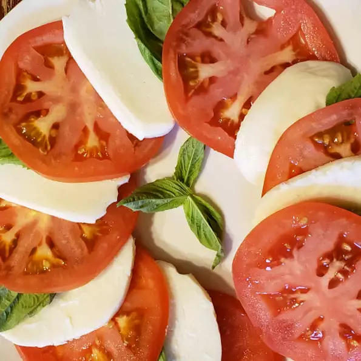

Insalata Caprese II

Description
Because this salad is so simple, fresh, top-quality tomatoes and mozzarella are important.
Ingredients
- 4 large ripe tomatoes, sliced 1/4 inch thick
- 1 pound fresh mozzarella cheese, sliced 1/4 inch thick
- ⅓ cup fresh basil leaves
- 3 tablespoons extra virgin olive oil
- fine sea salt to taste
- freshly ground black pepper to taste
Steps
- On a large platter, alternate and overlap the tomato slices, mozzarella cheese slices, and basil leaves. Drizzle with olive oil. Season with sea salt and pepper.
- That's it. (You can add anything you like though.)